第2章 有符号数的表示（Representing Signed Numbers）
本章导读
无符号数是”天然”的——比特串就是数值。但一旦要表示负数，就必须做一个编码约定。本章对比四种约定：原码、偏置码、补码（1’s/2’s complement），并引出”带符号数位”的思想（这是第 3 章冗余数系的入口）。2 的补码（2’s complement）之所以一统天下，靠的不是数学美感，而是它让减法器彻底消失：加法器一套硬件通吃加减。
2.1 原码表示（Signed-Magnitude Representation）
最高位做符号位（0 正 1 负），其余位表示绝对值。\(k\) 位原码的表示范围是 \([-(2^{k-1}-1),\ +(2^{k-1}-1)]\)。
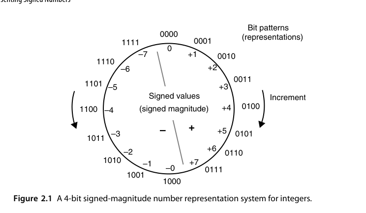
优点：取负只需翻转符号位；乘法/除法的符号处理是天然的”同号得正”。
缺点（硬件工程师的噩梦）：
- 存在两个零：\(+0\) 与 \(-0\) 是不同编码，比较逻辑要特判；
- 加减法不统一：
a + b的实际操作取决于两数符号的组合，硬件上要先比较绝对值大小、决定做加还是做减、再定结果符号——一套控制状态机换来一堆关键路径延迟。
原码加法的完整流程通常写成”预补码 → 无符号运算 → 后补码”三步（图 2.2）：先把负数操作数按模 \(2^{k-1}\) 取补，变成”补码化的幅值”；然后当作无符号数相加；最后根据两数符号决定结果是否要再取补、符号位取什么。这三步看着绕，本质上是把符号信息从数据通路里剥离出来，交给一条独立的符号逻辑处理——而这条符号逻辑要在加法结果出来之后才能定夺，正好压在关键路径末端。
原码并没有被淘汰——IEEE 754 浮点数的有效数（significand）部分就是原码表示。浮点加减法里那套”对阶→比较→加减→规格化”的复杂流程，很大程度上就是在为原码表示还债（见第 18 章）。
一个常被忽略的细节：原码的 \(\pm 0\) 不只是”浪费一个码字”。在浮点里，\(+0\) 与 \(-0\) 是语义不同的两个值（\(1/0^+ = +\infty\)，\(1/0^- = -\infty\)），IEEE 754 特意规定了它们 equality 成立但符号位不同。所以”两个零”在某些场景下是特性而非缺陷——判断它到底是开销还是收益，要看上层语义。
2.2 偏置表示（Biased Representations）
给所有数统一加上一个偏置常数（bias）\(B\)，把有符号区间平移到无符号区间：
\[ x_{\text{code}} = x + B \]
典型取 \(B = 2^{k-1}\)（称为 excess-\(2^{k-1}\) 码）。偏置码的一个漂亮性质：按无符号数比较编码的大小，就等价于比较有符号真值的大小——比较器免费用无符号的。
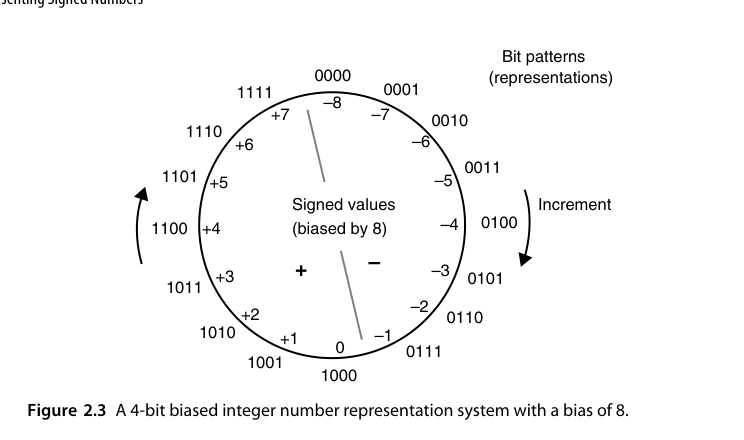
以 \(k=4\)、\(B=8\) 为例，编码表是 \(-8\!\to\!0000\)、\(-1\!\to\!0111\)、\(0\!\to\!1000\)、\(+7\!\to\!1111\)。注意这里的符号约定与直觉相反：最高位为 0 表示负、为 1 表示非负。这不影响比较器（平移不改变序关系），但会让”看最高位判正负”的直觉失效，读 RTL 时容易踩坑。
\(B\) 取 \(2^{k-1}\) 还是 \(2^{k-1}-1\)，是一个小但真实的取舍：
- \(B = 2^{k-1}\)：最小值对应全 0 码，最大值对应全 1 码，范围严格不对称（负数比正数多一个）；
- \(B = 2^{k-1}-1\)：范围几乎对称，且”最高位为 0 表示负”的边界正好落在 0 附近。
IEEE 754 的阶码（exponent）字段就是偏置码：单精度 bias = 127，双精度 bias = 1023。这样阶码比较可以用普通无符号比较器完成，浮点排序电路因此大大简化。
IEEE 754 还额外规定：阶码全 0 与全 1 被保留给非规格化数（subnormal）与 \(\pm\infty\)/NaN，不参与正常偏置解释。也就是说，实际可用的阶码区间是 \([1, 254]\)（单精度），对应真值 \([-126, 127]\)。这是”用码字换特殊语义”的典型手法——每保留一个特殊码字，就少一个可表示的正常值，规格设计时必须算清楚这笔账。
2.3 补码表示（Complement Representations）
补码的核心思想：在模 \(M\) 的算术系统里，用 \(M - x\) 扮演 \(-x\) 的角色。因为
\[ a - b \equiv a + (M - b) \pmod{M} \]
减法就变成了加法。对 \(k\) 位硬件，模 \(M = 2^k\) 是”免费”的——寄存器溢出自然丢弃高位，等价于自动取模。这就是2 的补码（2’s complement）。
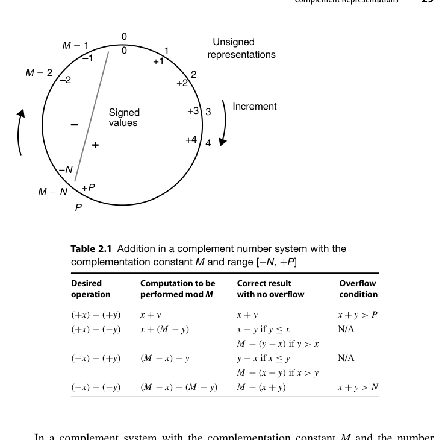
这个思想对任意基数都成立。基数 \(r\)、\(k\) 位时有两种补码：
- 基补（radix complement，\(r\)’s complement）：\(x^\ast = r^k - x\)；
- 减基补（diminished radix complement，\((r-1)\)’s complement）：\(x^\ast = (r^k - 1) - x\)。
二者的关系是 \(r\text{'s} = (r-1)\text{'s} + 1\)。放到二进制上：1 的补码就是按位取反（因为 \(2^k-1\) 是全 1，减去 \(x\) 等价于逐位取反），2 的补码则是”取反加 1”。放到十进制上：4 位数的 9 的补码是逐位用 \(9\) 减，10 的补码再加 1，例如 \(-1234\) 的 10 的补码是 \(10000-1234 = 8766\)。
若取 \(M = 2^k - 1\)，得到1 的补码（1’s complement）：按位取反即可取负，实现更简单，但同样有两个零，且加法后要”循环进位（end-around carry）“修正——把最高位的进位加回到最低位。这个修正让进位链形成一个环，时序上很尴尬，现代整数 ALU 基本不用它。
循环进位把进位链首尾相接，意味着没有任何一个时刻可以说”进位传播已经结束”：最高位产生的进位还要绕回最低位再算一遍。对同步设计，这等于把最坏路径从 \(k\) 级变成 \(k+1\) 级还要加一级反馈；对异步的进位完成检测（5.4 节），环形结构更是直接破坏”单调收敛”的前提。1 的补码换来的是”取负少一个加 1”，代价却是整条进位链的时序可控性——这笔交易不划算。
2.4 2 的补码与 1 的补码（2’s- and 1’s-Complement Numbers）
2 的补码的关键性质（\(k\) 位，最高位权重为 \(-2^{k-1}\)）：
\[ x = -x_{k-1}\cdot 2^{k-1} + \sum_{i=0}^{k-2} x_i \cdot 2^i \]
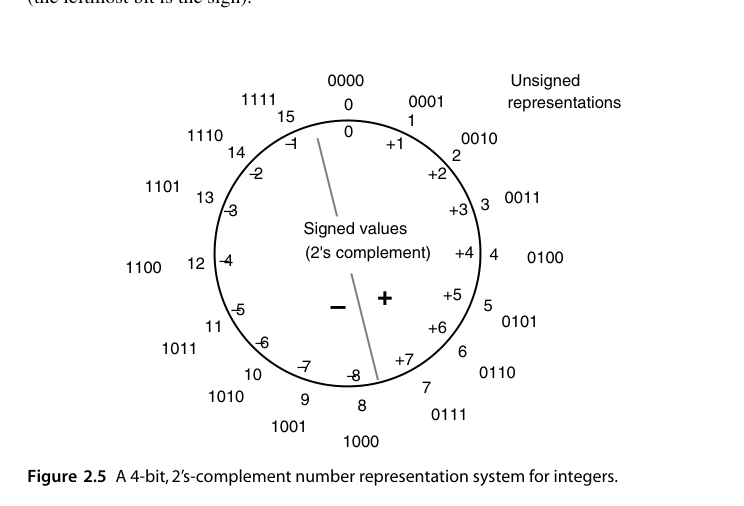
取负规则：按位取反再加 1。硬件上是”反相器 + 加法器进位置 1”，而一个加法器本来就有 \(c_{in}\) 端口——所以 加减法器可以共享同一个加法器：做减法时把 \(b\) 取反、\(c_{in}\) 置 1。这就是 2 的补码统一天下的直接原因。
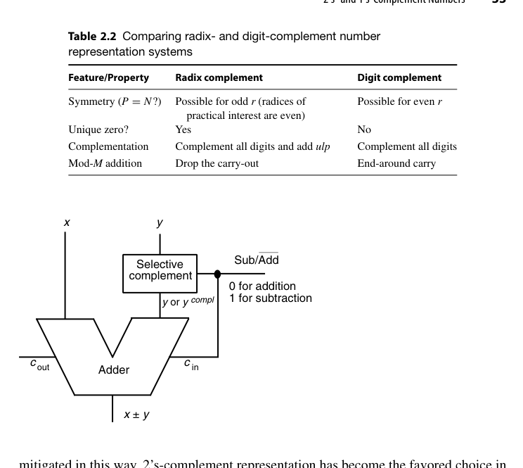
对应的 RTL 几乎不需要额外资源，只是一排 XOR 门加一个把 sub 接到 \(c_{in}\) 的连线：
module add_sub #(parameter int N = 8) (
input logic [N-1:0] a, b,
input logic sub, // 1 = 减法
output logic [N-1:0] s,
output logic cout
);
logic [N-1:0] b_eff = b ^ {N{sub}}; // sub=1 时取反
assign {cout, s} = a + b_eff + sub; // sub=1 时等价于 +1
endmodule符号扩展（sign extension）：位宽扩展时把符号位向左复制即可，数值不变。这个性质在 RTL 里每天都在用：
logic [7:0] a;
logic [15:0] b;
assign b = {{8{a[7]}}, a}; // 有符号扩展
// 或更稳妥地：b = 16'(signed'(a));范围不对称：\(k\) 位 2 的补码范围 \([-2^{k-1},\ 2^{k-1}-1]\)。最小值没有对应的正数——对 \(-2^{k-1}\) 取负会溢出（overflow）。这是定点软件里经典的 corner case（abs(INT_MIN) 未定义行为的硬件根源）。以 \(k=4\) 为例，\((-8)_{10} = 1000_2\)，取反加 1 后仍是 \(1000_2\)，即 \(-(-8) = -8\)。取负运算在最小值处不是对合的，这在写 RTL 时必须显式处理（饱和取负、加宽一位、或在上层禁止该输入）。
溢出判据（第 5 章会再次用到）：
\[ \text{Overflow} = c_k \oplus c_{k-1} = \overline{x_{k-1}}\,\overline{y_{k-1}}\,s_{k-1} + x_{k-1} y_{k-1} \overline{s_{k-1}} \]
即：两个同号数相加得到异号结果，才是溢出；异号相加永不溢出。
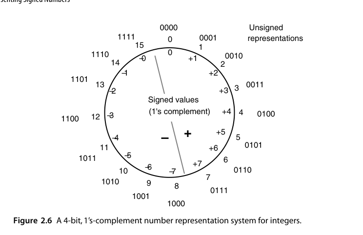
1 的补码在同一张 4 位编码表上的差别只有一处：全 1 码 \(1111\) 表示 \(-0\) 而不是 \(-1\)，因此范围退化为 \([-7, +7]\) 且有两个零。除此之外，它的取负（纯取反）比 2 的补码少一次加 1，但代价是 2.3 节说的循环进位。
判断补码溢出最快的心算法：看两个操作数的符号与结果的符号。\(+7 + +1\) 在 4 位下得到 \(1000 = -8\)，两个正数加出负数，溢出；而 \(-8 + +7 = -1\) 无论从哪个角度看都没问题。所谓 \(c_k \oplus c_{k-1}\)，只是这个直观判据在电路上的等价写法。
2.5 直接与间接有符号运算（Direct and Indirect Signed Arithmetic）
- 直接法（direct）：运算电路直接消化符号编码——2 的补码加法器就是典型，符号位与其余位一视同仁地进位。
- 间接法（indirect）：先把操作数转成无符号（或分离符号），做完幅值运算，再按规则拼回符号——原码运算属于此类。
间接法看着麻烦，但在乘除法里反而常见：先把符号异或出来，幅值用无符号阵列算，最后再根据符号决定是否取补。Booth 重编码（第 10 章）之前的朴素有符号乘法就是这么干的。
三种编码下”符号移除（sign removal）“与”结果调整（adjustment）“两步的代价并不相同：原码只需拆出符号位，几乎零成本；偏置码两步都要做加法/减法；补码两步都是选择性取补（根据符号位决定是否取反加 1）。所以”间接法”的开销与所选编码强相关——这也是评价一个表示法时要连带着看”配套运算贵不贵”的原因。
更进一步说，间接法的思想不止于处理符号，它是操作数预处理这一通用手法的特例。计算 \(\sin x\) 时，先用 \(\sin(-x) = -\sin x\)、\(\sin(\pi - x) = \sin x\) 把自变量折进 \([0, \pi/2]\)（第 22 章 CORDIC 正是这么做的）；做除法时，先把除数和被除数同乘一个比例因子把除数拉到接近 1 的区间（第 15、16 章）。共同套路是：花一点预处理，把运算核心放进一个更好算、更好收敛的区间。
2.6 带符号位与带符号数字（Using Signed Positions or Signed Digits）
2 的补码可以理解为”最高位权重为负”的位置数制——这是带符号位置（signed position）。顺着这个思路再进一步：如果允许每一位数字都带符号呢？例如数位集合取 \(\{-1, 0, +1\}\)（常记作 \(\{\bar{1}, 0, 1\}\)），一个数就有了无穷多种合法编码（\(1 = 1 = 1\bar{1} = \bar{1}11\cdots\) 风格的不同写法）。
形式化地，用一个符号向量 \(\lambda = (\lambda_{k-1}, \dots, \lambda_0)\)、\(\lambda_i \in \{-1, +1\}\) 指定每个位置的权重符号：
\[ (x_{k-1}\dots x_0)_{r,\lambda} = \sum_{i=0}^{k-1} \lambda_i\, x_i\, r^i \]
这个框架把三种看似无关的数系统一了：\(\lambda\) 全为 \(+1\) 是普通正基数；仅最高位为 \(-1\) 是 2 的补码；\(\lambda\) 交替取 \(\pm 1\) 则得到负基数（negative radix）表示。也就是说，2 的补码并非什么特殊技巧，只是”符号向量”这个更大空间里的一个点。
图 2.10 给出的例子是基数 4、数位集合 \([-1, 2]\)：把标准数位 \(3\) 改写成 \(-1 + 4\)（后者成为向左传播的进位 1），反复进行直到没有 3 剩下。它仍是非冗余的（恰好 4 个数位值），所以转换过程本质上是一次进位传播，最坏要扫完全部数位。
而图 2.11 的基数 4、数位集合 \([-2, 2]\) 则是冗余的：把 \(3\) 写成 \(-1+4\)、把 \(2\) 写成 \(-2+4\)，产生的进位 1 一定能被高位一个 \(\le 1\) 的数位吸收掉，因此转换过程无进位传播（反向转换则仍是从低到高串行的）。这一对比正是第 3 章的主题：冗余带来的”吸收余量”，把串行过程变成了并行过程。
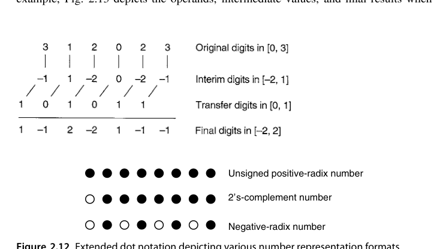
一般地，任何包含 0 的连续整数区间 \([-\alpha, \beta]\)（只要区间内至少有 \(r\) 个值）都可以作为基数 \(r\) 的数位集合。若恰好有 \(r\) 个值，表示是非冗余的、每个值唯一编码；若超过 \(r\) 个，则冗余度（redundancy index）为
\[ \rho = \alpha + \beta + 1 - r \]
\(\rho \ge 1\) 就意味着有些数有多种写法。第 3 章会证明：\(\rho\) 越大，无进位加法的实现越宽松，但每个数位要占的比特也越多（存储与布线成本上升）。这就是冗余数系的全部账本。
为了在图上区分正负权重，本书把点记号扩展成扩展点记号：实心点表示正权重位（posibit），空心点表示负权重位（negabit）。
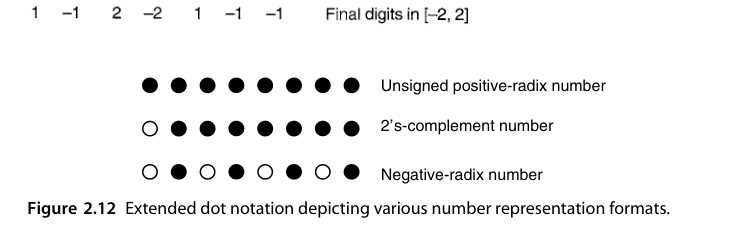
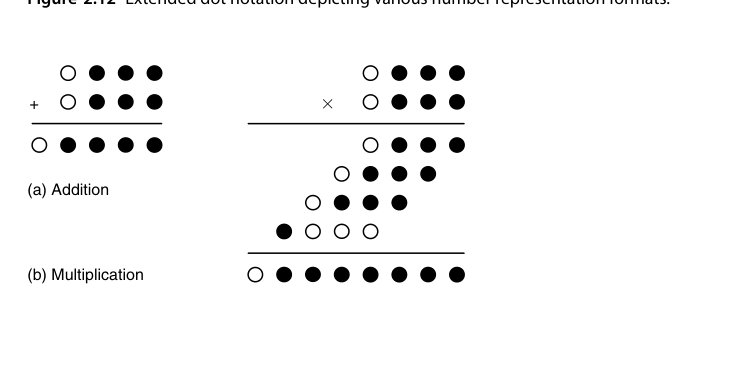
这种带符号数字（signed-digit）表示就是第 3 章冗余数系（redundant number system）的核心。冗余带来的自由度，换来的是加法不需要等待进位传播——这是所有高速算术部件（乘法器的部分积压缩、SRT 除法的商数字选择）的共同秘密武器。
本章小结
- 2 的补码让加减共用一套加法器，是整数硬件的事实标准；记住取负 = 取反 + 1、符号扩展、溢出判据三件套。
- 原码活在浮点数里，偏置码活在浮点阶码里——老编码在特定生态位仍有优势。
- 1 的补码只剩历史意义和教学价值（循环进位在时序上是灾难）。
- “数位可以带符号”这个想法，是通往高速算术的大门。
原书插图
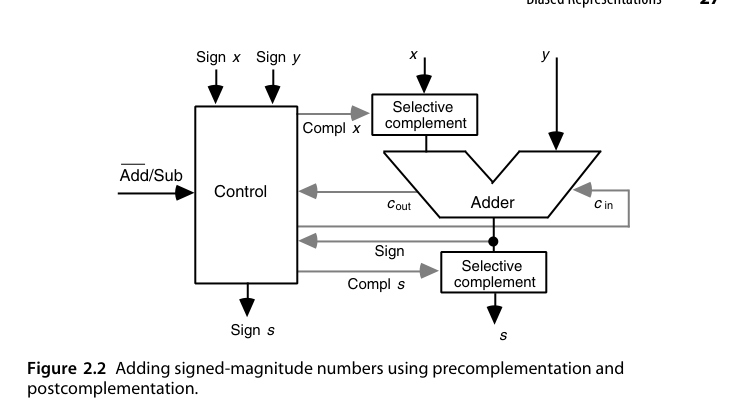
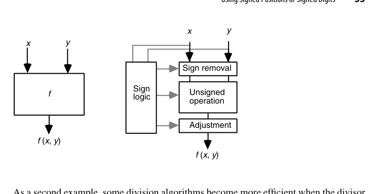
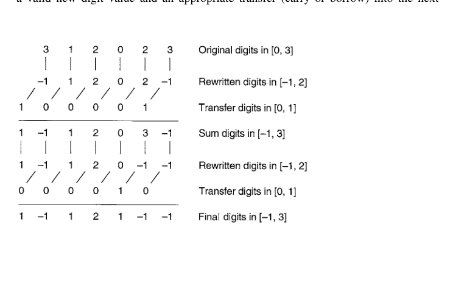